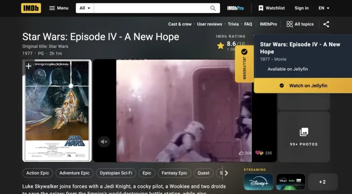

Cross-browser extension
Super Seerr Extension
Flagship
A Chrome and Firefox extension that connects Seerr with seven movie and TV platforms, adds rating overlays, watchlists, and bulk request flows.
- Chrome + Firefox builds
- 36/36 passing at commit 49fca11